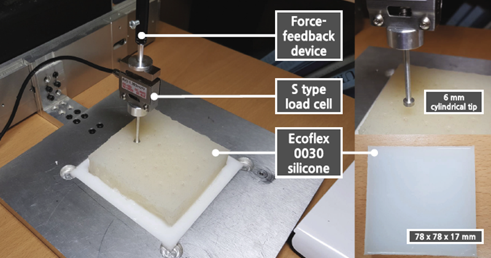
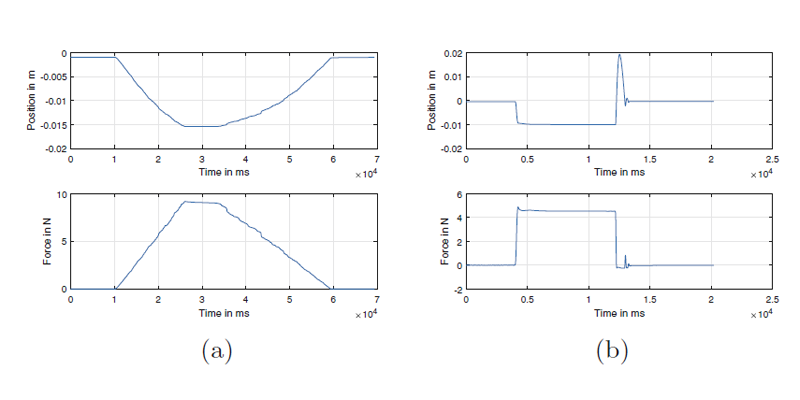
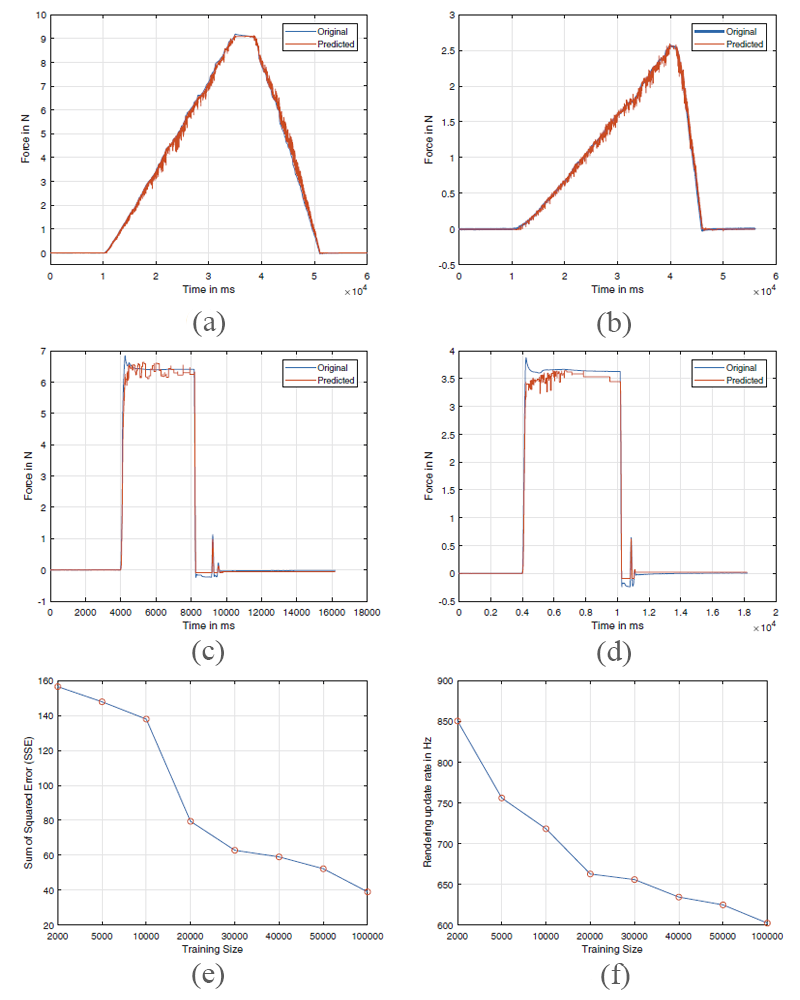

VISCOELASTICITY RENDERING
with random forest algorithm
Random Forest for Modeling and Rendering of Viscoelastic Deformable Objects
Asia Haptics 2018
ABSTRACT
In the recent past, data-driven approaches have gained importance for modeling and rendering of haptic properties of deformable objects. In this paper, we propose a new data-driven approach based on a well known machine learning technique: random forest. We train the random forest for regression for estimating the input-output mapping between discrete-time interaction data (position/displacement and force) collected on a homogeneous deformable object. Unlike currently existing data-driven approaches, we use at most 1% of the recorded interaction data for the training of the random forest. Even then, the trained random forest model reproduces all the interactions used for the training with a good accuracy. This also provides promising results on unseen data. When employed for haptic rendering, the model estimates smooth and stable interaction forces at an update rate more than 650 Hz.
FULL CITATION
Hojun Cha, Amit Bhardwaj, Chaeyong Park, and Seungmoon Choi. 2018. Random Forest for Modeling and Rendering of Viscoelastic Deformable Objects. In Proceedings of the International AsiaHaptics conference (AsiaHaptics '18). Springer, 48-53. DOI:https://doi.org/10.1007/978-981-13-3194-7_10
FIGURES

Data acquisition setup of our system. We used a force feedback device to acquire the position, a load cell for the force sensing.

Measured position and response force signals for a typical (a) ramp and (b) creep force signals.

Force responses predicted by random forest modeling with 20,000 training samples: (a)–(b) and (c)–(d) are for ramp and creep data, respectively. Left column: high range of force; Right column: low range of force. Measured position and response force signals for a typical (e) ramp and (f) creep controlled force signals.